Cómo usar cada pantalla: el mapa y sus vistas, la ficha de cada circuito, el plan territorial, Elena, la estrategia de bancas y el búnker de la noche de la elección.
Una herramienta de comando territorial: cruza el padrón, los resultados electorales mesa a mesa, el perfil social del censo y el mapa de barrios para responder tres preguntas — dónde estamos parados, dónde conviene crecer y quién se ocupa de cada territorio. Todo el análisis es agregado por zona: el sistema nunca dice ni sugiere cómo vota una persona.
| Padrón | 459.156 electores de la Capital, con sexo, domicilio, circuito, escuela y mesa. Las edades son estimadas por rango de DNI (±3 años): el padrón no trae fecha de nacimiento. |
| Elección 2023 | Escrutinio definitivo mesa a mesa, los cuatro cargos (Gobernador, Legislador, Intendente, Concejal). Es la única con cuatro cargos juntos, así que es donde se mide el corte de boleta. |
| Elección 2025 | Diputados Nacionales, escrutinio provisorio, 1.350 mesas. En Capital: LLA 43,7% contra Frente Tucumán Primero 40,1%. |
| Censo 2022 | 671 radios censales del INDEC: pobreza, servicios, trabajo, educación y salud, agregados por circuito y por barrio. |
| Territorio | 20 distritos, 47 circuitos electorales, 128 escuelas de votación y los 327 barrios del mapa oficial municipal. |
El acceso es solo para administradores, con el correo y la contraseña que te entregaron. La primera vez el sistema obliga a cambiar la contraseña: la clave inicial la conoce quien te dio de alta. No hay recupero automático — se la pedís a quien administra los usuarios, que puede restablecerla desde Usuarios.
Arriba están las secciones. El botón de sol o luna cambia entre modo claro y oscuro —el mapa cambia de estilo con él— y el último cierra la sesión.
| Mapa | La pantalla principal: el territorio con todas sus vistas y la ficha de cada circuito. |
| Personas | La gente del operativo con DNI, teléfono, espacios asignados y avance de tareas. |
| Estrategia | Voto disperso, universos de listas, reparto de bancas e informes. |
| Segmentos | Cohortes del padrón guardables, por sexo, franja etaria y circuitos. |
| Búnker | El escrutinio propio en vivo de la noche de la elección. |
| Usuarios | Alta y baja de administradores. Solo la ve el superadmin. |
| Vistas | Cambian qué pinta el mapa. Se explican en las dos páginas siguientes. |
| Distritos / Circuitos | Qué división se dibuja. Los datos electorales se organizan por circuito, así que en esas vistas «Distritos» queda deshabilitado. |
| Capas | 3D levanta cada espacio según la métrica de la vista · Cobertura pinta el estado de asignación · Avenidas y Calles realzan el callejero · Barrios dibuja los 327 barrios · Satélite pone la foto real debajo. |
| Buscador | Un circuito («15B») y te lleva; el nombre de una escuela o de una persona del padrón; o lenguaje natural con el botón de la chispa («mujeres de 16 a 25»). El micrófono hace lo mismo dictando. |
| Indicadores | Electores; distritos y circuitos con al menos una persona asignada (sobre 20 y 47); personas con espacio; y tareas cumplidas sobre el total. |
| Navegación | Arrastrar mueve, la rueda acerca. Un clic en un circuito abre su ficha y lo encuadra; al pasar el cursor aparece un resumen. La leyenda, abajo a la izquierda, se cierra con la X. |
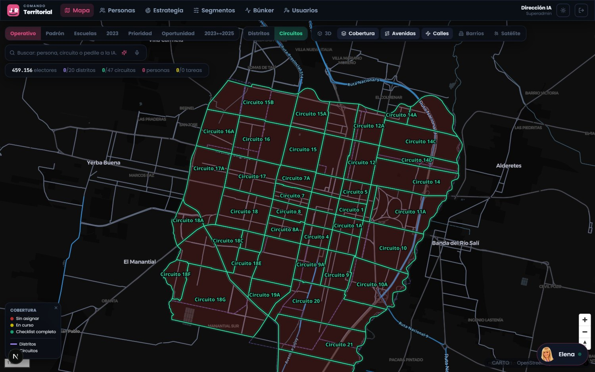
Pinta cada espacio según su estado de asignación: sin asignar en curso checklist completo
Es la vista para saber dónde falta estructura. Con la capa 3D, la altura de cada espacio crece con la gente asignada y las tareas pendientes: los bloques bajos y rojos son los agujeros del operativo.
Es la única vista donde el selector Distritos está disponible, porque la cobertura se organiza en las dos divisiones.
Mapa de calor de electores por circuito, del más claro al más intenso. Con los filtros de la segunda fila podés ver solo mujeres o solo varones, y una franja etaria: 16–25, 26–40, 41–60 o 60 y más.
El padrón no trae fecha de nacimiento, así que la franja se deduce del rango del número de DNI, con un margen aproximado de ±3 años. Sirve para dimensionar cohortes, no para afirmar la edad de nadie.
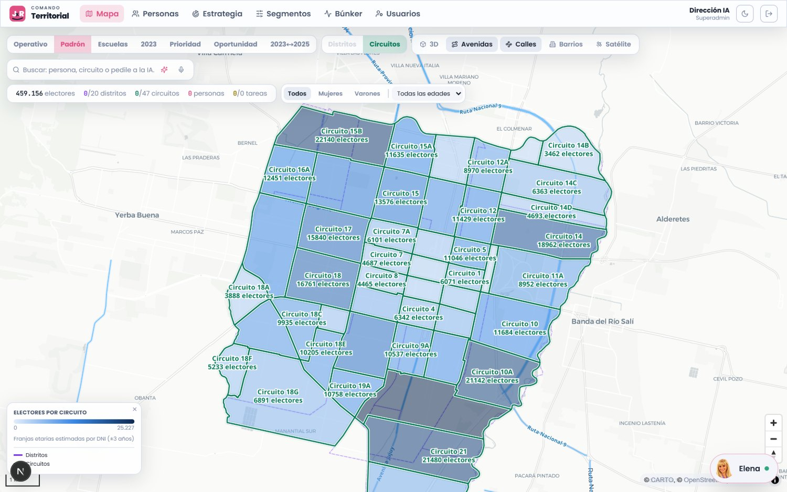
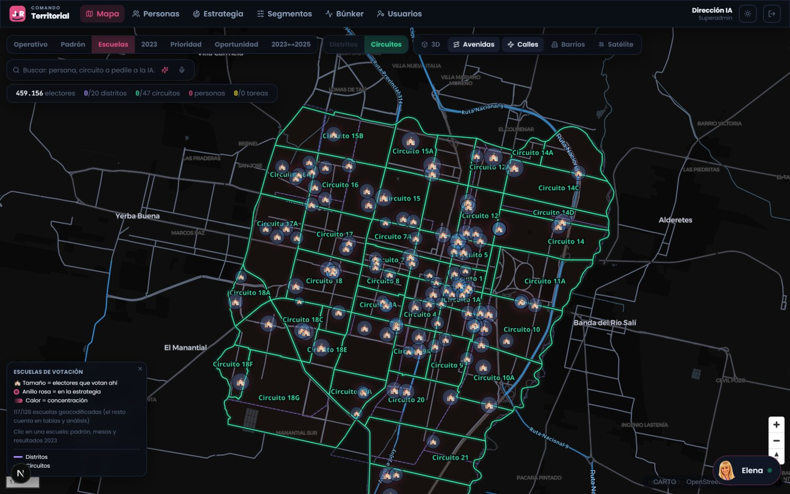
Cada escuela es un punto cuyo tamaño crece con los electores que votan ahí, sobre un mapa de calor que muestra la concentración. Las que tienen anillo rosa ya están dentro del universo de la estrategia.
Un clic en una escuela abre su ficha: padrón, mesas, resultados 2023 y un botón para sumarla o quitarla de la estrategia.
La leyenda avisa cuántas escuelas están geocodificadas. Las que no tienen ubicación no aparecen como punto, pero sí cuentan en todas las tablas y análisis.
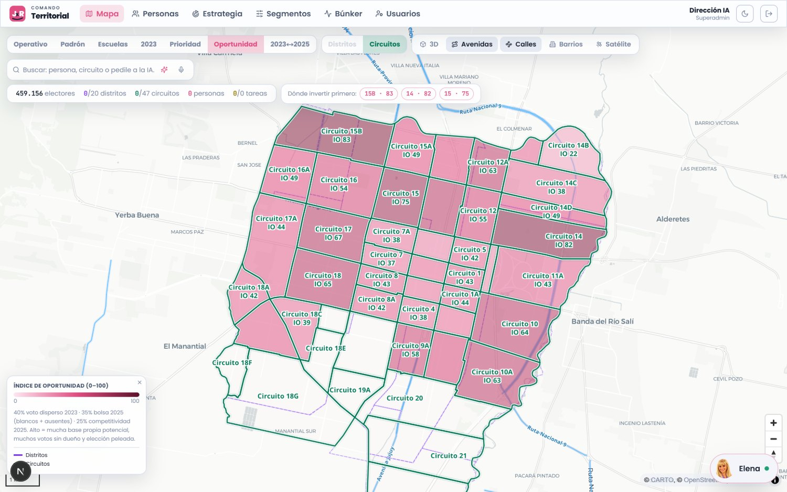
Cada circuito lleva su Índice de Oportunidad de 0 a 100, escrito sobre el mapa. Combina tres cosas, normalizadas entre los 47 circuitos:
Un índice alto significa mucha base propia, muchos votos sin dueño y elección peleada: las tres condiciones para que el trabajo territorial rinda.
Arriba, la barra «Dónde invertir primero» tiene los tres primeros como botón: un clic abre la ficha de ese circuito. Hoy encabezan 15B (83), 14 (82) y 15 (75).
Elegís una lista de 2023 y una agrupación de 2025 en los dos selectores, y el mapa pinta los puntos de porcentaje que ganó o perdió en cada circuito.
Si hubo caídas, la escala es divergente: verde creció, rojo cayó. Si creció en todos los circuitos, la escala pasa a intensidad —más oscuro creció más— y la leyenda lo aclara.
Son elecciones distintas (una municipal y provincial, otra nacional) y el 2025 es provisorio. La comparación muestra el movimiento del territorio, no una equivalencia entre listas.
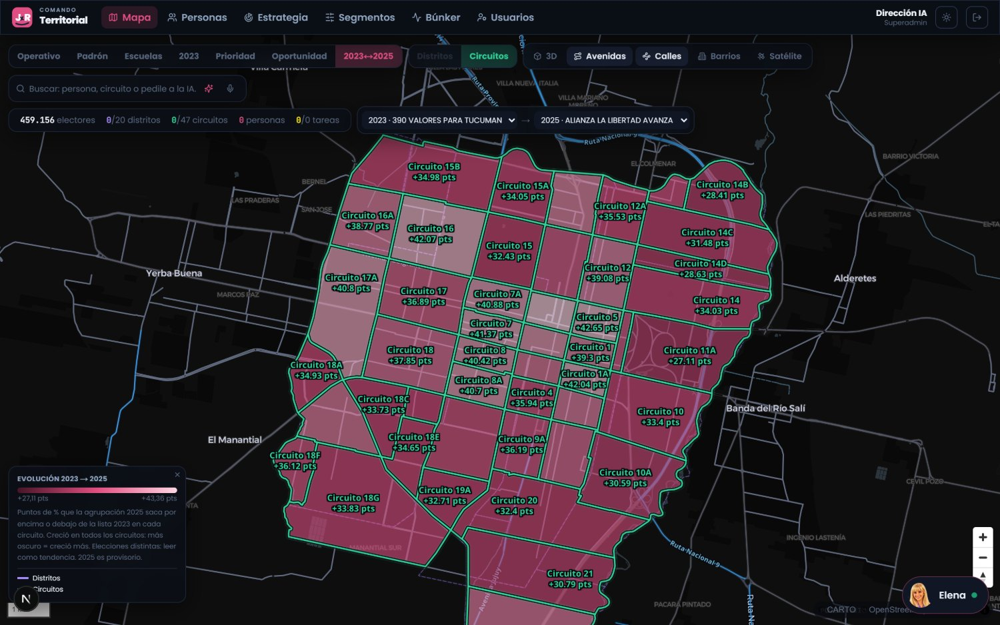
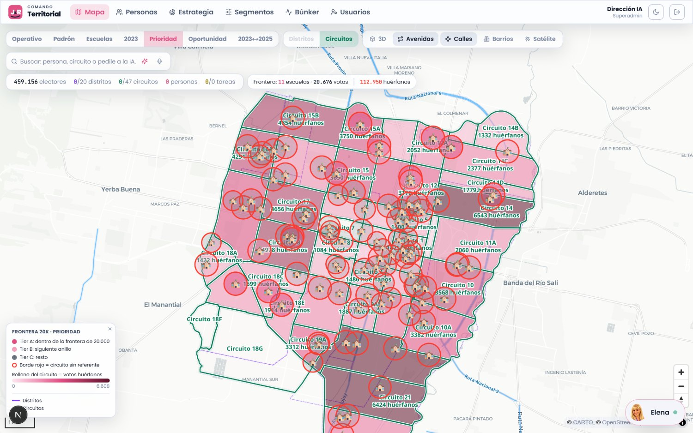
Trabaja a nivel escuela y responde «¿dónde actuamos primero?». Cada escuela recibe un puntaje (volumen de voto disperso, propensión y descubierto de cobertura) y cae en un tier:
El borde rojo marca las escuelas cuyo circuito no tiene ningún referente asignado, y el relleno del circuito son los votos huérfanos: voto disperso sin nadie que lo trabaje.
Es la vista que conecta el análisis con el operativo: dice dónde hay votos y nadie a cargo.
Un clic en cualquier circuito del mapa abre su ficha a la derecha. Es el corazón del sistema: todo lo que se sabe de ese territorio en una sola columna, de arriba hacia abajo. Cada bloque se despliega con el triangulito.
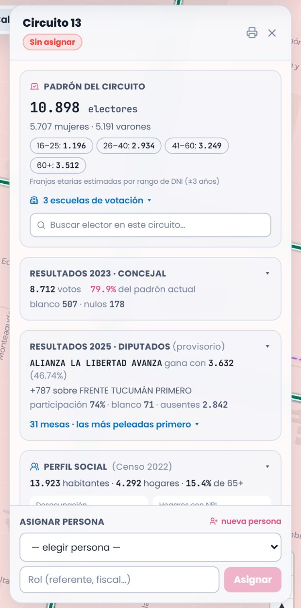
Electores totales, división por sexo y las cuatro franjas etarias estimadas. El enlace celeste despliega las escuelas de votación: un clic en cualquiera abre su ficha y la marca en el mapa. El icono 🏫 indica que está ubicada; 📋 que todavía no tiene coordenadas y abre la ficha igual.
El buscador de electores es para soporte logístico: decirle a alguien dónde le toca votar. No sirve —ni debe usarse— para inferir nada sobre su voto.
Votos totales, blancos, nulos y el porcentaje sobre el padrón actual. Al desplegarlo aparece el ranking de listas con barras.
Quién ganó y por cuánto sobre el segundo. La diferencia se colorea sola: roja si son 150 votos o menos —circuito en disputa— y amarilla hasta 500 —competitivo—. Debajo, participación, blancos y ausentes, que son la bolsa de crecimiento.
El enlace «N mesas · las más peleadas primero» abre la tabla ordenada por diferencia entre el primero y el segundo, con blancos y ausentes de cada mesa. Las diferencias de 20 votos o menos salen en rojo: son las mesas que se dan vuelta con una jornada de trabajo.
Habitantes, hogares y cuatro indicadores comparados contra el promedio de la ciudad. Si el valor supera al de la ciudad se pinta en rojo, porque ahí hay una agenda concreta. Las referencias de la ciudad son: NBI 7,7% · hacinamiento 14,6% · sin cloaca 14,1% · desocupación 10,7% · sin cobertura de salud 29,9%.
Desplegado agrega cómo trabaja la gente de la zona y sus condiciones de vida.
Los barrios oficiales que lo componen, como botones. Un clic lo resalta en el mapa y lo encuadra; volver a tocarlo quita la marca. Si el barrio se reparte entre circuitos, el porcentaje dice cuánto cae en este.
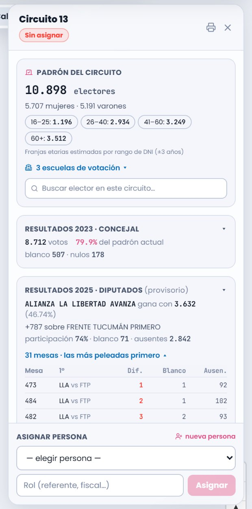
Las mesas de la elección nacional 2025 no llevan la misma numeración que las del padrón provincial. Por eso el 2025 se analiza por mesa y por circuito, sin bajar a escuela, y la comparación entre 2023 y 2025 se hace por circuito, donde los 47 códigos sí coinciden.
Para elegir el mensaje y la propuesta de cada zona, nunca para predecir el voto. Una zona con desocupación por encima del 10,7% de la ciudad pide agenda de trabajo y oficios; una con muchos adultos mayores, salud; una con hogares sin cloaca, infraestructura.
Al final de la ficha está Plan territorial: cinco campos que convierten el análisis en algo asignable. Se escribe directo y se guarda con el botón Guardar.
| Segmento | A quién le hablamos acá. |
| Problemática | Qué duele en la zona, según el perfil social y el territorio. |
| Mensaje | La idea fuerza, en una frase. |
| Propuesta | Qué se ofrece concreto. |
| Abordaje | Cómo se trabaja: puerta a puerta, referentes, actividades. |
El encabezado muestra el estado: borrador con el avance (por ejemplo 3/5 campos) o validada cuando el equipo acordó el plan. Se alterna con «Marcar validada».
El botón Borrador con Elena le pide la propuesta completa cruzando 2023, 2025, blancos, ausentes y el censo. Después se copia acá y se ajusta: la decisión política siempre queda en manos del equipo.
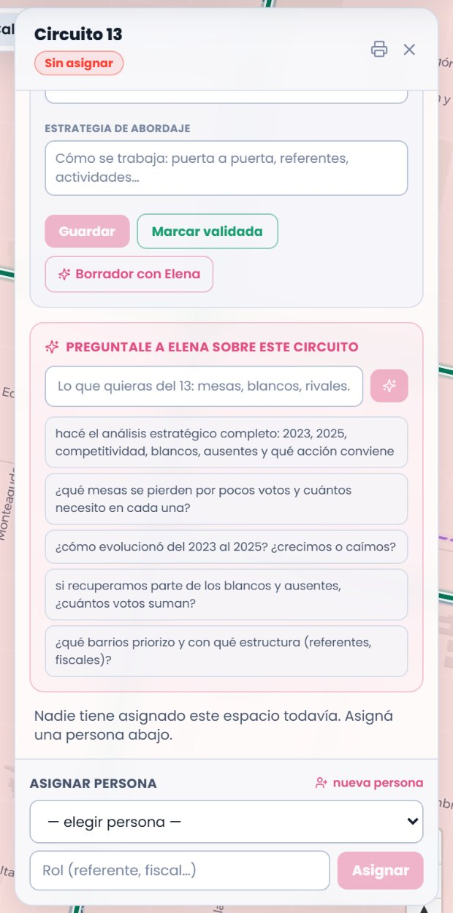
El icono de impresora en el encabezado de la ficha abre una hoja lista para imprimir o guardar como PDF, pensada para el referente que no va a abrir la aplicación. Trae todo en una carilla: padrón y escuelas, perfil social contra la ciudad, resultados 2023 y 2025, el plan territorial, los barrios y las mesas más peleadas.
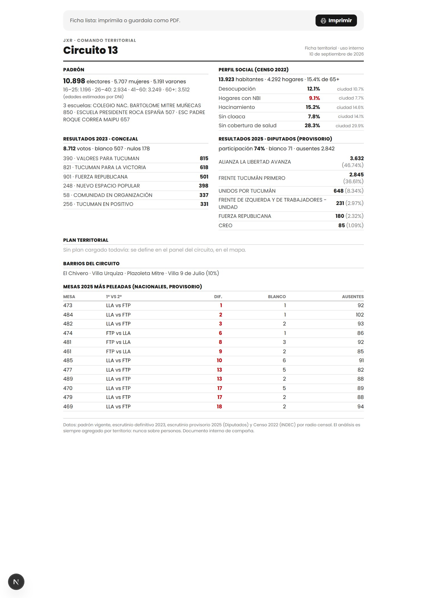
| Padrón | Electores, sexo, franjas etarias y las escuelas del circuito. |
| Perfil social | Los cinco indicadores del censo con el valor de la ciudad al lado; en rojo los que están peor que el promedio. |
| Resultados | 2023 por Concejal y 2025 por Diputados, con participación, blancos y ausentes. |
| Plan | Los cinco campos, y si está validado o es borrador. |
| Barrios | Los barrios que lo componen, con su porcentaje. |
| Mesas | Las doce mesas más peleadas de 2025. |
La barra gris de arriba con el botón «Imprimir» no sale impresa. Para guardarla como archivo, elegí «Guardar como PDF» en el destino de impresión.
Elena está en todas las pantallas, en el botón redondo de abajo a la derecha. No es un buscador: es una analista que consulta la base antes de responder. Debajo de cada respuesta figura qué herramientas usó, así se puede rastrear de dónde salió cada número.
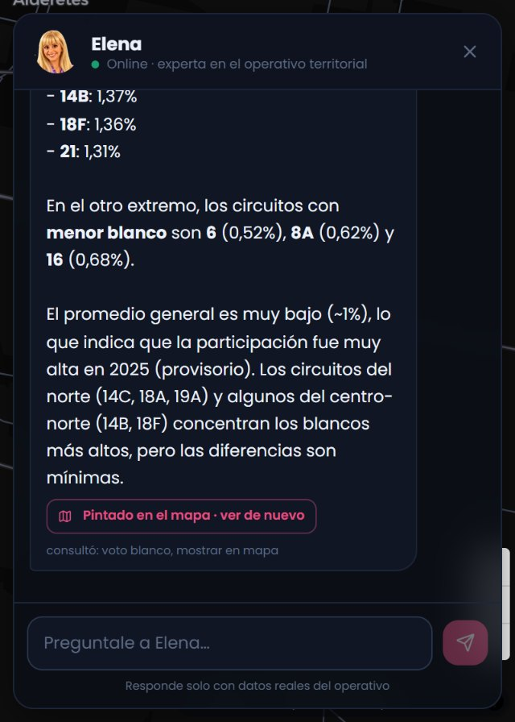
| Operativo | Cobertura, quién tiene cada circuito, tareas pendientes, circuitos sin asignar. |
| Padrón | Cuántos electores hay en un segmento, dónde se concentran, dónde vota una persona. |
| Resultados | Ranking de listas, quién ganó cada mesa, rendimiento de una lista, voto en blanco, corte de boleta 2023. |
| Oportunidades | Dónde se perdió por menos de N votos, el Índice de Potencial Electoral, la evolución 2023→2025. |
| Territorio | Perfil social de un circuito o barrio, ranking social, qué barrios componen un circuito. |
| Planes | Qué fichas territoriales hay cargadas y validadas, y borradores nuevos. |
Cuando un análisis da un resultado por circuito, Elena lo lleva al mapa: «pintame los votos en blanco de 2025 por circuito», «marcá los circuitos donde perdimos por menos de 100 votos». Consulta los datos y el mapa se pinta con el valor escrito sobre cada circuito.
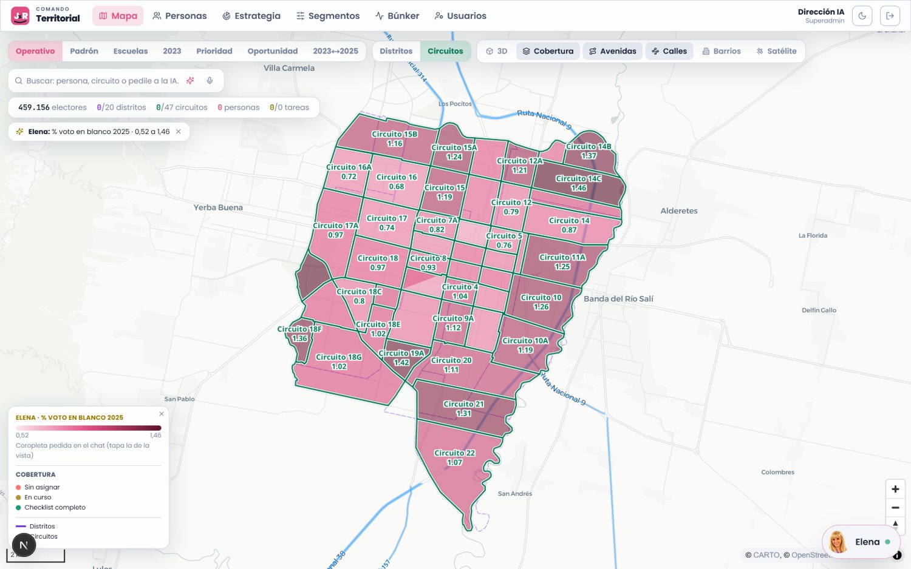
En la ficha de cada circuito hay un bloque «Preguntale a Elena sobre este circuito» con un campo libre y cinco atajos. La pregunta viaja ya con el contexto del circuito, así que no hace falta repetirlo.
No inventa datos: si una consulta no devuelve algo, lo dice. Y nunca especula sobre el voto de una persona: el análisis político es siempre agregado por escuela, circuito o cohorte.
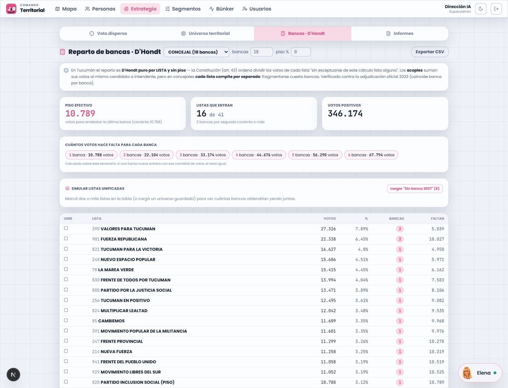
En Tucumán el reparto es D’Hondt puro por lista y sin piso legal: la Constitución (art. 43) ordena dividir los votos de cada lista «sin exceptuarse de este cálculo lista alguna». Los acoples suman al mismo candidato a intendente, pero en concejales cada lista compite por separado: fragmentarse cuesta bancas. El cálculo está verificado contra la adjudicación oficial de 2023, banca por banca.
La Frontera 20K rankea las escuelas por prioridad y marca el conjunto mínimo que suma la meta de 20.000 votos, con los votos huérfanos aparte. La otra pestaña lista escuelas por umbral de votos. La selección de listas es editable y la comparten el mapa, la estrategia y Elena. Todo se exporta a CSV.
Elegís un universo de listas guardado y ves dónde están sus votos, por barrio, circuito, escuela o mesa: votos, porcentaje, electores, blancos, ausentes y participación. Cada fila se despliega para ver el aporte lista por lista.
El botón «Generar informe ahora» hace que Elena recorra todo —cobertura, estrategia, oportunidades, alertas y planes cargados— y escriba el parte, con tres acciones concretas para la semana. Queda guardado y lo ve todo el equipo.
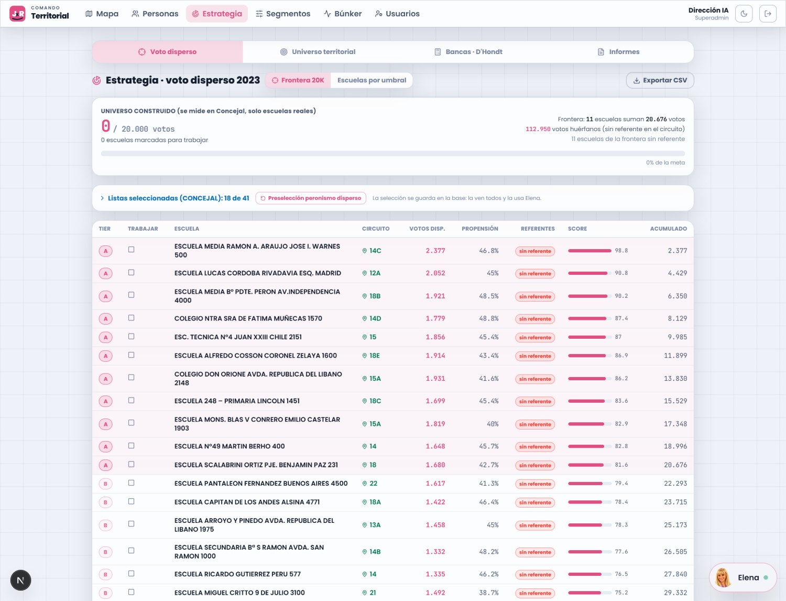
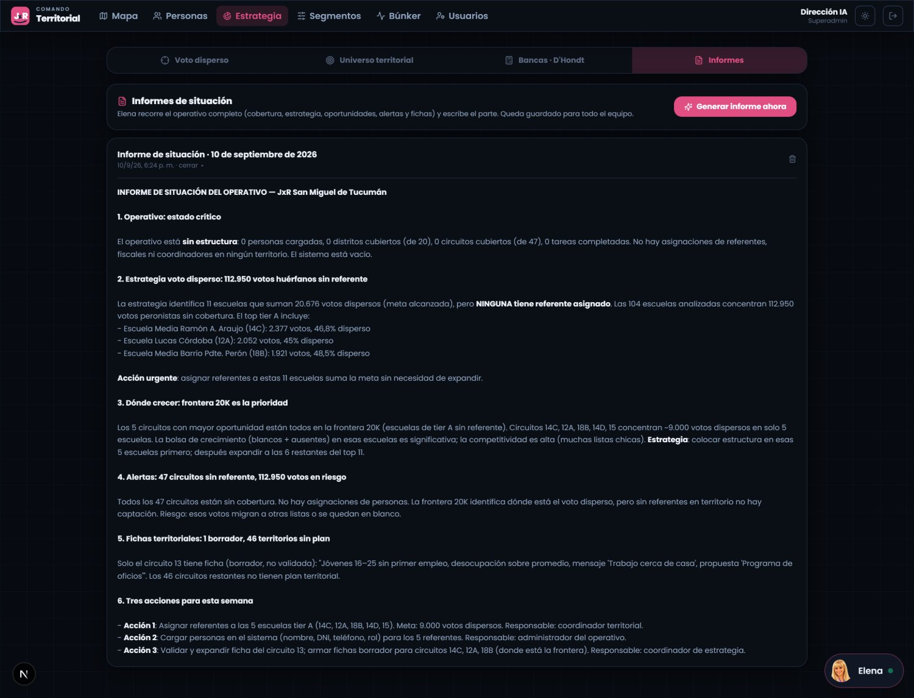
Cinco pestañas: quién está en cada mesa y cómo contactarlo, cuánta gente votó a cada hora, los problemas que van apareciendo, el escrutinio propio y la configuración. La barra de arriba resume la jornada —mesas con fiscal, fiscales ausentes, incidencias abiertas— y deja el teléfono del comando a un clic.
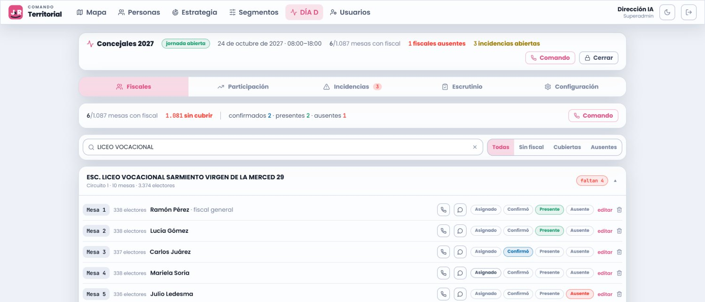
| Contacto | Los dos botones de cada fila llaman o abren WhatsApp con el mensaje ya escrito, diciendo de qué mesa y escuela se trata. El teléfono se puede anotar como venga («0381 15 512-3456»): el sistema lo normaliza. |
| Estado | Se cambia con un clic y es lo que más se toca en la jornada: Asignado anotado · Confirmó avisó que va · Presente está en la escuela · Ausente no llegó y hay que reemplazarlo. |
| Asignar | Se elige una persona del operativo —y trae su nombre y teléfono— o se escriben sueltos, para anotar gente rápido sin crear la ficha completa. Cada mesa admite un rol propio (fiscal de mesa, fiscal general) y una nota. |
El fiscal reporta cuánta gente votó en su mesa a cada corte horario. El tablero compara los circuitos entre sí y marca los que van por debajo del promedio con un «← traccionar»: ahí hay que mandar gente a buscar votantes, y hay que saberlo a las 14, no a las 19.
El porcentaje sale solo de las mesas que reportaron: es una muestra para comparar circuitos. El sistema rechaza cargar más votantes que electores tiene la mesa.
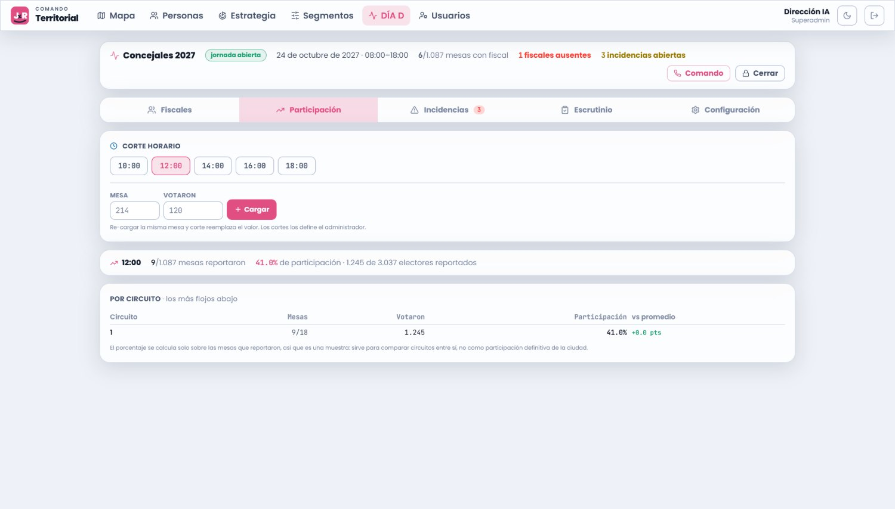
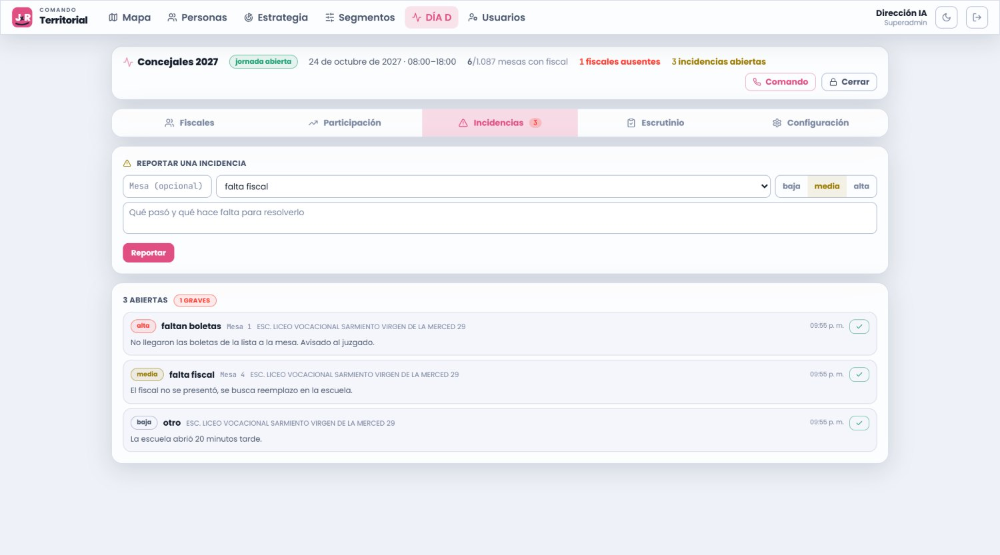
Se reporta con la mesa (o la escuela entera), el tipo —faltan boletas, urna sin faja, la mesa no abrió, aprietes, traslado de votantes…—, la gravedad y qué hace falta. La escuela y el circuito los completa el sistema a partir del número de mesa.
Las graves van primero y el contador aparece en la pestaña. Un clic la cierra, y se puede reabrir.
Se carga el telegrama: número de mesa y los votos de cada lista, más blancos y nulos. La escuela, el circuito y el padrón salen solos del número de mesa, y el total se calcula y se controla contra el padrón: si los votos superan a los electores, no deja cargar.
El tablero proyecta el resultado y las bancas por D’Hondt mesa a mesa, con el puntero de cada circuito y las últimas cargas. Se refresca solo cada 15 segundos mientras la jornada está abierta.
Re-cargar una mesa reemplaza el valor: así se corrigen errores sin duplicar.
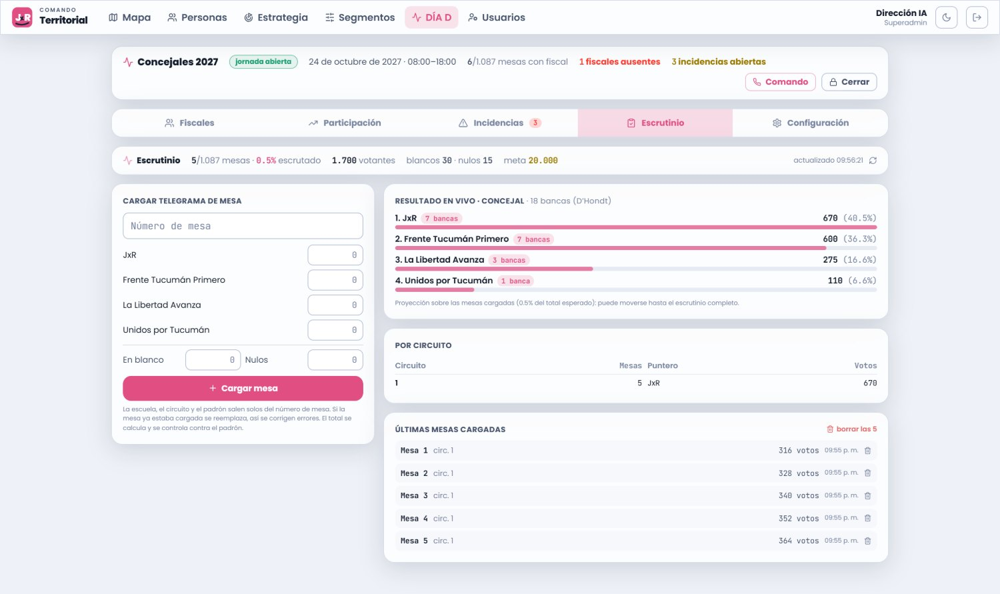
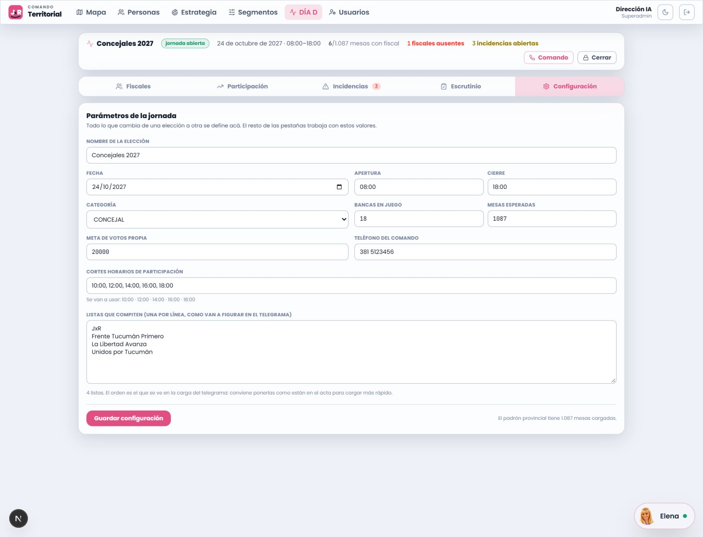
Todo lo que cambia de una elección a otra se define acá, y el resto de las pestañas trabaja con esos valores.
| Elección | Nombre, fecha y horarios de apertura y cierre. |
| Cargo | Categoría y bancas en juego (18 concejales, 19 legisladores por la Sección Capital). |
| Mesas | Cuántas se esperan, para calcular el avance del escrutinio. |
| Meta | Los votos propios que se buscan; aparece en el tablero. |
| Comando | El teléfono central, que queda a un clic en todas las pantallas. |
| Cortes | Las horas en que los fiscales reportan participación. |
| Listas | Las que compiten, una por línea. Conviene ponerlas en el mismo orden del acta: es el orden en que se cargan los votos. |
Con la jornada cerrada el tablero deja de refrescarse, pero los datos quedan.
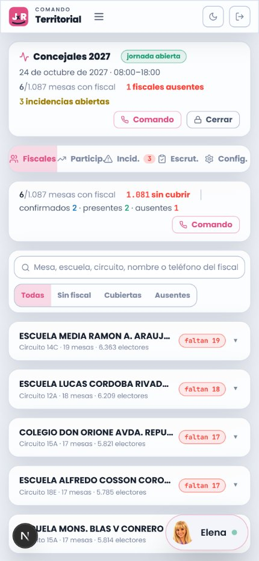
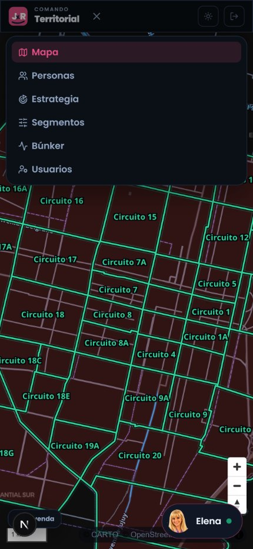
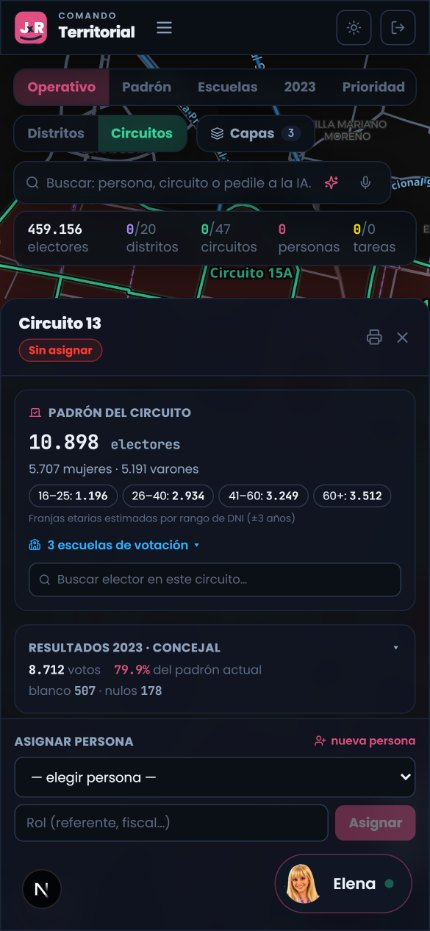
Todo funciona en el teléfono, que el día de la elección es el único dispositivo que importa: las vistas del mapa se deslizan con el dedo y las tablas anchas, de costado.
1. El voto es secreto: el análisis es siempre agregado, nunca sobre una persona. 2. Los datos de contacto se usan para logística del equipo y no se comparten fuera (Ley 25.326). 3. El escrutinio del DÍA D es una proyección propia: no reemplaza al oficial.